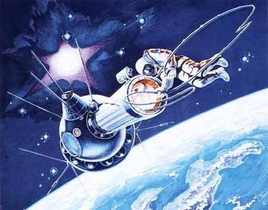
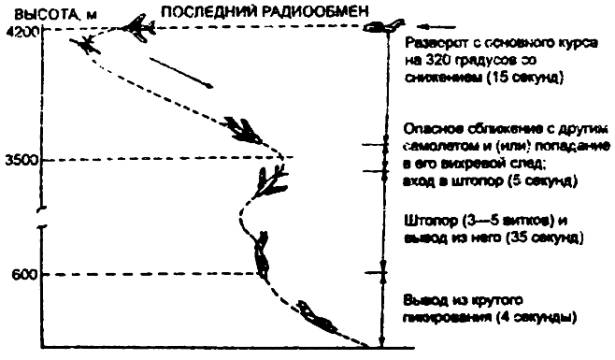
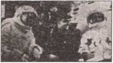

Жертвы космоса
Однако мы с вами хронологически несколько забежали вперед. Давайте снова вернемся во времена Гагарина и посмотрим, как шло завоевание космоса дальше.
МНОГОМЕСТНАЯ ЭПОПЕЯ. Наконец пришел день, когда на смену устаревшим «Востокам» пришли «Восходы». Однако если вы думаете, что в конструкции кораблей что-либо радикально изменилось, то глубоко ошибаетесь. Будучи по-прежнему в цейтноте, конструкторы просто в объем, предназначенный для одного кресла, ухитрились втиснуть сразу три, сидеть в которых приходилось, что называется, у друг друга на головах.
Придумал это новшество конструктор К. П. Феоктистов. А поскольку понимал, что втиснуться в эти креслица в скафандрах никак не удастся, сам же вызвался пойти в полет в обычном спортивном костюме.
Вместе с ним полетели: в роли командира — В. М. Комаров, врачом — Б. Б. Егоров. Сам Феоктистов значился как бортинженер-исследователь.
Впрочем, к тому времени конкурентная борьба за участие в полетах стала столь жесткой, что «мы и в майках бы согласились лететь», вспоминал Феоктистов.
Смельчакам опять повезло, они благополучно вернулись на Землю. А вот со следующим «Восходом-2» дела обстояли далеко не столь хорошо.
ВЫХОД В ОТКРЫТЫЙ КОСМОС. Рекорд по численности экипажа был уже установлен, и потому в полет на сей раз отправились двое — П. И. Беляев и А. А. Леонов. Они уже смогли надеть скафандры. Да и без них на сей раз никак было не обойтись, поскольку в программу полета входил выход одного из космонавтов в открытый космос. Для этого к люку «Восхода» был пристыкован складной шлюз.
Я видел этот шлюз своими глазами. Представьте себе гармошку из серебристой многослойной пленки, которая под давлением газа может расправиться в трубу диаметром чуть больше метра и длиной метра три. С обеих сторон труба эта перекрыта дверцами-люками. Через одну космонавт должен был из кабины перейти в шлюз, через другую — выйти в открытый космос.
Шлюз необходим для того, чтобы не выпускать весь воздух из кабины. Делать же трубу складной пришлось по конструктивным особенностям «Восхода». Диаметр обтекателя ракеты-носителя не столь велик, чтобы вывести на орбиту шлюз жесткого типа, заранее пристыкованный к кораблю.
И это были еще далеко не все сложности. Как вспоминал сам А. А. Леонов, вышел он без особых затруднений. А вот когда пришло время возвращаться, оказалось, что войти, «как учили», ногами вперед не удается. Мягкий скафандр под действием поданного в него воздуха стал довольно жестким, а главное, раздулся подобно мячу и не пускал космонавта в узкий лаз люка.
В конце концов Леонову пришлось сбросить давление в скафандре до минимального, развернуться головой вперед и передвигаться, цепляясь руками, буквально втаскивая себя в узкую трубу. В кабину он ввалился, что называется, на пределе: и воздуха в скафандре оставалось уже не так много, и сам он от усиленных физических упражнений изрядно перегрелся и был на грани теплового удара.
Но главная опасность была даже не в этом. Сброс давления до минимума грозил кессонной болезнью. Однако бог миловал: перед выходом в открытый космос Леонов какое-то время дышал чистым кислородом, поэтому азота в крови у него было немного и при резком понижении давления свободный азот не выделялся в кровь и она не вскипела.
Но на том приключения экипажа вовсе не кончились. Когда пришло время приземляться, оказалось, что автоматика спуска не работает. Пришлось перейти на систему ручного управления. В итоге вместо привычных казахстанских степей экипаж приземлился в пермской тайге, откуда его эвакуировали целые сутки.
В общем, командир, видно, изрядно перенервничал; вскоре у него стала развиваться язва желудка. Он до последнего скрывал ее, и, когда Павлу Ивановичу стали делать операцию, выяснилось, что резервы организма уже во многом исчерпаны… В начале 1970 года он умер.
Алексей Леонов жив и поныне. И очень не любит, когда его называют «везунчиком».
Хотя, если разобраться, у него было еще немало шансов погибнуть. Некоторые фрагменты той давней истории стали явными лишь недавно, спустя сорок лет.
ДИВЕРСАНТЫ В КОСМОСЕ… Только теперь стало понятно, что тот короткий — всего-то 26 часов — полет может войти в Книгу рекордов Гиннесса по количеству нештатных ситуаций, когда экипаж Беляева-Леонова находился буквально на грани жизни и смерти.
К первому выходу человека в открытый космос в Советском Союзе опять-таки готовились в спешке: до нас дошли сведения, что американцы вот-вот должны были осуществить подобный проект.
И все-таки Королев настоял, чтобы перед полетом Павла Беляева и Алексея Леонова на орбиту отправили беспилотный корабль-разведчик, из его шлюзовой камеры в открытый космос была выдвинута платформа с установленными на ней образцами технических материалов и биологических тканей. Так, опытным путем предполагалось изучить, как повлияют на человека космическая радиация, температура, потоки частиц высокой энергии…
Корабль собрал все необходимые данные, но произошло непредвиденное: при возвращении на Землю он по нелепой случайности был взорван, и бесценная информация пропала. Дело в том, что все автоматические объекты имели тогда систему АПО (автоматического подрыва объекта) на случай серьезного отказа при посадке, чтобы многотонная махина не рухнула на головы людей целиком, а разлетелась на мелкие части. Кроме того, таким образом страховалась сохранность секретов на тот случай, если незапланированное падение придется на территорию другого государства.
Так вот, при заходе беспилотного корабля на посадку конец одной команды и начало следующей неожиданно сформировали третью — на подрыв объекта. В результате за месяц до намеченной экспедиции Беляева и Леонова специалисты остались без важных сведений.
Сергей Павлович Королев честно рассказал обо всем экипажу и стал советоваться: «Что будем делать? Пойдем на запланированный эксперимент с большой неопределенностью или будем ждать месяцев шесть-восемь новый корабль, чтобы снова запустить его в беспилотном режиме для сбора всех утерянных данных, и только потом полетим сами? Ваше мнение?»
Оба космонавта прекрасно знали, какого ответа от них ждут. Американцы были уже практически готовы к аналогичному эксперименту: их астронавт на корабле «Джемини» должен полностью его разгерметизировать, высунуть руку наружу, и это будет зафиксировано как первый выход человека в космос.
И наши космонавты дали тот ответ, которого от них ждали: «Мы находимся сейчас в прекрасной форме. Прошли для этого полета все, что необходимо, и психологически готовы выполнить задание. В общем, надо лететь…»
Заметим, что в ходе подготовки к полету на Земле отрабатывались действия при различных нештатных ситуациях. В том числе рассматривался даже вариант потери сознания космонавтом, вышедшим в космос; в этом случае командир должен был тоже выйти из корабля и вернуть в него бесчувственного товарища.
Королев потом признавался, что очень волновался. Перед полетом он подозвал к себе Леонова и попросил: «Ты там особо на рожон не лезь. Просто выйди из корабля, помаши нам рукой и — назад. И мы поймем, может ли человек работать в открытом космосе…»
Но ни тогда, ни позже он так и не признался в открытую, какую генеральную (или, если хотите, генеральскую) цель преследовала эта экспедиция — военные хотели знать, можно ли организовать команду космических диверсантов. Людей, которые в случае необходимости могли перебраться к вражескому аппарату, вскрыть или взорвать его…
Но прежде надо было понять, может ли человек сколько-нибудь эффективно действовать в открытом космосе…
ЧЕРЕДА НЕПРИЯТНОСТЕЙ. Они начались сразу же после старта. Вместо запланированных 300 км из-за ошибки в расчетах корабль выбросило на высоту в 500 км — прямо под радиационные пояса. Но это было далеко не самым страшным из того, что случилось в том полете…
По-настоящему опасная ситуация, как уже говорилось, возникла при выходе Алексея Леонова в открытый космос.
Выходной скафандр — сложная многослойная термостатическая система с автономным жизнеобеспечением примерно на час работы в космосе — был многократно и скрупулезно проверен на Земле. Однако в лаборатории выход в открытый космос моделировался в барокамере, где атмосфера вокруг разрежалась до той, что соответствует 60–90 км над уровнем моря (более высокое разрежение не позволяла создать техника). В реальности же на высоте 500 км Леонов попал в глубочайший вакуум. В итоге было полностью снято наружное противодавление и скафандр безобразно раздуло. «Руки и ноги вышли из перчаток и сапог, — вспоминал потом Леонов, — было такое ощущение, что я вот-вот лопну…»
Как только космонавт уменьшил давление, тотчас руки у него вошли в перчатки, ноги — в сапоги, скафандр уменьшился в объеме и появился шанс протиснуться-таки в шлюзовую камеру.
И космонавт начал вход руками вперед. А поскольку боялся потерять кинокамеру — кто иначе поверит, что он выходил в открытый космос? — то ее пустил перед собой.
Но в шлюзовой камере выявилась новая проблема: теперь надо было разворачиваться на 180 градусов, чтобы закрыть руками выходной люк. Как это ему удалось при сечении шлюза 120 см и длине скафандра 190 см, Леонов и сам до сих пор плохо понимает. Вот уж воистину: хочешь жить, умей вертеться.
Приложив максимум сил, он все-таки развернулся, закрыл крышку люка. Пульс у него в этот момент подскочил до 190 ударов в минуту; начался жуткий внутренний перегрев. На дыхание и вентиляцию у Леонова было всего 60 литров дыхательной смеси в минуту — это чрезвычайно мало, в 6 раз меньше нормы.
В общем, когда Алексей Леонов забрался в спускаемый аппарат и снял шлем, командира он не увидел — пот залил глаза. Из каждого сапога он потом вылил по три литра воды. А сам потерял за этот выход почти семь килограммов веса.
НЕПРИЯТНОСТИ ПРОДОЛЖАЮТСЯ. Казалось, самое страшное было позади. Отстрелив не нужную более шлюзовую камеру, космонавты стали готовиться к спуску. Однако судьба преподнесла им еще один сюрприз, который запросто мог привести к гибели уже всего экипажа. В корабле вдруг начался подъем парциального давления кислорода: 160, 180… 220. Космонавты принялись бороться с ним, понижая влажность, температуру. Но подъем давления продолжался и достиг значения в 460 мм ртутного столба.
Кстати, в аналогичных условиях в январе 1967 года в кабине «Апполона-1» погибли во время тренировки американские астронавты Гриссом, Уайт и Чаффи.
«Алмазы» были в оцепенении, но потом, видимо, сказалось утомление кошмарного полета — они просто махнули рукой на свое положение и попробовали вздремнуть. Человеческим силам все же есть предел, а там будь что будет…
Разбудил их какой-то взрывообразный хлопок. Поначалу решили, что это и есть конец. Но вокруг ничего не горело. Наоборот, давление в кабине начало медленно падать и постепенно нормализовалось.
Как потом выяснилось, ситуация создалась вроде бы из-за пустяка. Во время выхода Леонова корабль долгое время находился в статичном положении. Из-за этого его бок, обращенный в сторону Солнца, нагрелся до плюс 160 градусов, а другой, в тени, остыл до минус 140. Произошла термическая деформация всего корпуса, и внутренний люк при возвращении космонавт а в корабль не до конца сел на место, хотя соответствующие датчики и просигнализировали его закрытие.
Какой-то ничтожный, микронный зазор все же остался, и происходило травление воздуха наружу. Система же жизнеобеспечения при любом падении давления реагирует добавлением в атмосферу корабля кислорода. В итоге количество его и стало возрастать.

Так космонавт А. Леонов запечатлел свой собственный выход в открытый космос.
Давление росло до тех пор, пока с характерным, довольно громким хлопком не сработал специальный клапан сброса лишнего воздуха. Этого сотрясения оказалось достаточно, чтобы выходной люк встал на место и парциальное давление кислорода вошло в норму.
Но это было еще не все. Уже при подготовке к спуску случился отказ системы ориентации, и экипаж был вынужден перейти на ручную систему управления спуском. В итоге «Алмазы» вместо казахстанских степей сели в пермскую тайгу.
БЫЛ ЛИ СЕКРЕТНЫЙ ПРИКАЗ? Но, пожалуй, самый драматичный эпизод той памятной экспедиции долгое время оставался «в тени». Накануне полета с первым выходом человека в открытый космос между Сергеем Королевым и Павлом Беляевым состоялся разговор. Существует две его версии.
Согласно одной версии, Королев с Беляевым обсуждали вариант, что делать, если корабль по какой-либо причине не сможет вернуться на Землю. Тогда, согласно инструкции, Беляев должен был принять решение о самоликвидации экипажа — застрелить сначала Леонова, а потом и себя.
Согласно второй версии, которую обнародовал психолог отряда космонавтов Ростислав Богдашевский, по нечаянности кое-что слышавший, Королев сначала спросил Беляева, что тот будет делать, если Леонов не сможет войти в шлюз.
«Во время тренировок на невесомость при полетах на самолете-лаборатории Ту-104 я отрабатывал такую нештатную ситуацию, — ответил Беляев. — Он имитировал бессознательное состояние, и я затаскивал его в шлюз и далее в спускаемый аппарат».
Тогда главный конструктор спросил напрямик: «А если у тебя ничего не получится, сможешь отстрелить Алексея вместе со шлюзовой камерой?»
Помолчав, Беляев ответил: «Такого не может быть».
Теперь задумался Королев. А потом неожиданно подытожил: «Что ж, получается, Павел Иванович, к полету не готов. Иди…»
Беляев никуда, естественно, не пошел, а после минутной паузы тихо выдавил из себя: «Если потребуется, я смогу это сделать».
«Спасибо», — сказал Королев.
Правда, Леонов в возможность такого исхода, не верит и по сей день. «Паша без меня бы не вернулся», — утверждает он. А Беляева о том уже, как известно, не спросишь. Тот полет, видимо, столь дорого дался Павлу Ивановичу не только из-за череды нештатных ситуаций.
Его еще, вероятно, мучил и вопрос морального выбора: исполнять или нет тайный приказ начальства? И вся эта история, похоже, повлияла него так сильно, что значительно сократила продолжительность его жизни.
Кстати, это была не первая потеря отряда космонавтов от подобной болезни. В апреле 1968 года из-за язвы был вынужден уйти восьмой кандидат в космонавты Дмитрий Заикин. Он, пока был дублером, тоже чересчур перенервничал. И на очередной медкомиссии, обнаружив язву, его списали по здоровью.
Надо сказать, что в отряде космонавтов всякий раз остро переживали потери. Ведь уже более трети состава покинули первый отряд. «Мы тяжело переживали их уход, — вспоминал Георгий Шонин. — И не только потому, что это были хорошие парни, наши друзья. На их примере мы видели, что жизнь — борьба и никаких скидок или снисхождений никому не будет…»
Но главные потери были еще впереди.
«СОЮЗ-1» И ДРУГИЕ. Началась подготовка к полетам на кораблях нового поколения — «Союзах». В качестве командиров совершить полеты на них готовились космонавты Владимир Комаров, Юрий Гагарин — он был назначен дублером командира «Союза-1». Командиром «Союза-2» назначили Валерия Быковского, а в качестве бортинженеров — еще не летавших тогда Алексея Елисеева и Евгения Хрунова. Дублерами их стали Николаев, Кубасов и Горбатко.
По программе первым должен был стартовать Комаров, через сутки — Быковский, имея на борту Елисеева и Хрунова. После стыковки на орбите Елисеев и Хрунов должны были перейти на борт «Союза-1», выполнить ряд исследований и через неделю втроем вернуться на Землю.
Однако на деле все получилось совсем иначе. Причем неожиданности начались еще до старта.
В январе 1966 года скоропостижно скончался С. П. Королев. Правда, главным конструктором вскоре был назначен заместитель Королева, академик В. П. Мишин; все работы продолжались по намеченной программе. Тем не менее подспудно в воздухе стала ощущаться какая-то нервозность…
Внешне же, повторяем, все шло по плану: 10 апреля 1967 года на аэродроме Байконура приземлилось два самолета. На старт прибыли, согласно существующей традиции, отдельными самолетами для большей безопасности основной и дублирующий экипажи, ученые и конструкторы, члены Государственной комиссии…
В. М. Комаров стартовал 23 апреля. Почти сразу же после выхода на орбиту начались неприятности — у «Союза-1» не раскрылась одна панель солнечных батарей. Государственная комиссия приняла решение: старт «Союза-2» пока отложить. Экипаж уехал в гостиницу. Затем решение изменили, решили все же «Союз-2» запустить, состыковать его с первым кораблем, выйти в открытый космос и раскрыть панель солнечной батареи вручную.
Однако положение «Союза-1» на орбите было неустойчивым, его крутило, стыковка оказалась бы невозможна. Старт второго корабля окончательно отменили, а Комарова стали готовить к аварийной посадке. Сначала она должна была состояться на семнадцатом витке, но из-за плохой работы датчиков ориентации ее перенесли на девятнадцатый, посоветовав Комарову вручную сориентировать корабль.
Ничего подобного ранее Комарову делать не доводилось. Но выбора у него не было. И он заверил командование, что справится с поставленной задачей.
Спуск начался… Чем он закончился, всем известно: раскрутку остановить не удалось и при открытии основного парашюта его купол был смят — скрученные стропы не дали ему раскрыться полностью. «Союз-1» на большой скорости врезался в землю [2].
Ни дублеру Комарова Гагарину, ни командиру «Союза-2» на выручку товарища отправиться не разрешили — технические возможности кораблей не позволяли осуществить аварийную пересадку экипажа с одного корабля на другой.
Спустя полтора года после трагедии «Союз-2» был запущен в беспилотном варианте: нужно было убедиться, что все недочеты в конструкции были устранены.
Несчастья тем временем продолжали преследовать отряд космонавтов. 27 марта 1968 года при довольно-таки загадочных обстоятельствах погиб Ю. А. Гагарин. Командиром отряда вместе него был назначен В. Ф. Быковский. Его и трех других космонавтов — А. Леонова, Н. Рукавишникова и В. Кубасова — рекомендовали для участия в новой программе «Л-1». В переводе на обыденный язык это означало, что они начали готовиться к высадке на Луну.
Впрочем, о лунной программе, связанных с нею перипетиях и слухах мы поговорим в дальнейшем. Здесь же, заканчивая разговор об околоземных делах, приоткроем еще одну страницу советской космонавтики.
ГАГАРИН ВЗЯТ НА НЕБО? Как видите, все эти потери в отряде космонавтов, среди специалистов-ракетчиков были по-человечески вполне понятны. И объясни все это людям своевременно, никаких бы слухов данные случаи не породили. Но власть предержащие распорядились по-иному. Они никак не комментировали, откуда у космонавта номер один вдруг появился загадочный шрам над бровью, хотя ничего особо таинственного в том не было: в автомобильную аварию может попасть всякий. Они не пояснили, почему после полета Валентины Терешковой был вообще расформирован женский отряд космонавток…
В общем, нам не рассказывали так много, что даже сама смерть Ю. А. Гагарина породила новую волну слухов. Самый невероятный из них таков: дескать, Гагарин не погиб, а был «взят на небо» некими высшими силами. И в подтверждение давались ссылки на недавно умершую болгарскую прорицательницу Вангу, которая вроде бы сказала одному из посетивших ее космонавтов: «Что же ты будильник Юрию не купил? Он ведь о нем спрашивает…»
И космонавт ахнул: действительно, незадолго перед тем злополучным полетом он пообещал Юрию Алексеевичу будильник, но потом замотался да так о часах и не вспомнил.
Еще один слух, как уже говорилось, был связан со шрамом. Дескать, Гагарина хотели убрать. На самом деле лихой пилот превысил скорость на шоссе и…

Траектория последнего полета Ю. Гагарина и В. Серегина.
Что же касается, последнею полета, то его предыстория такова.

В. Комаров с П. Беляевым и А. Леоновым перед полетом.
ТАЙНА ПОСЛЕДНЕГО ПОЛЕТА. Ю. А. Гагарин, как уже говорилось, был дублером В. М. Комарова, который погиб в испытательном полете на корабле «Союз-1». Он рвался помочь товарищу, но спасти того было уже невозможно…
Юрий Алексеевич все-таки продолжал подготовку к новому полету. В плане подготовки значились и полеты на истребителе. Вот что пишут по поводу последнего полета Гагарина люди весьма авторитетные — доктор технических наук, лауреат Государственной премии С. М. Белоцерковский и летчик-космонавт СССР, дважды Герой Советского Союза А. А. Леонов. Оба специалиста принимали участие в работе комиссии, тщательно расследовавшей данное летное происшествие и пришли вот к какому выводу.
Полет Ю. А. Гагарина и летчика-инструктора B. C. Серегина на учебно-тренировочном самолете МиГ-15 УТИ проходил между двумя слоями облаков. Верхний слой располагался на высоте порядка 8000 м, нижний — около 500–600 м. «Доложив руководителю полетов о завершении упражнений в зоне и получив разрешение на возвращение, Гагарин после нисходящей спирали стал сразу выполнять разворот. Обычно при таком маневре происходит постепенное нарастание перегрузки, углов атаки и крена…»
Почему же произошла катастрофа? Ответ на этот вопрос содержит несколько вариантов. Пожалуй, самый абсурдный состоит в том, что пилоты в кабине находились в нетрезвом состоянии, а потому утратили необходимую осторожность и навыки пилотирования. Однако анализ останков однозначно доказывает, что оба — и Серегин и Гагарин — были совершенно трезвы.
Вариант второй — в самолет была подложена бомба, Гагарин, дескать, слишком много знал, и это кое-кому не нравилось — тоже не имеет под собой должных оснований. Никаких свидетельств — прямых или косвенных — подрыва самолета не обнаружено до сих пор.
На сегодняшний день основной версией стала следующая. В зоне пилотирования по недосмотру руководителя полетов генерала Н. Ф. Кузнецова и диспетчера внезапно появился еще один самолет, предположительно, истребитель Су-11. Он проскочил так близко от МиГа, что летчики были вынуждены принять чрезвычайные меры, чтобы уйти от столкновения. Однако их все-таки зацепило турбулентной струей от пронесшегося поблизости самолета. В результате МиГ-15 УТИ свалился в штопор, выйти из которого летчикам не хватило 150 м высоты или полутора секунд полета. И все же, как показали результаты расследования, они боролись до конца.